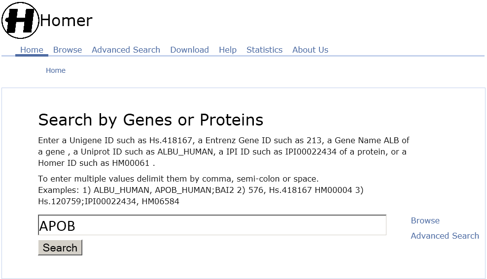
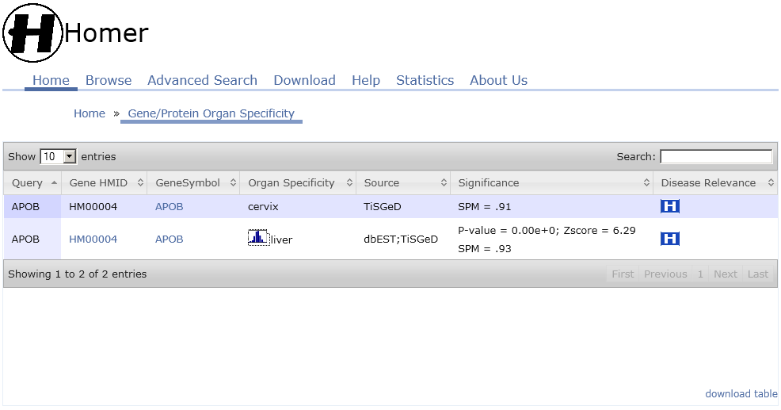
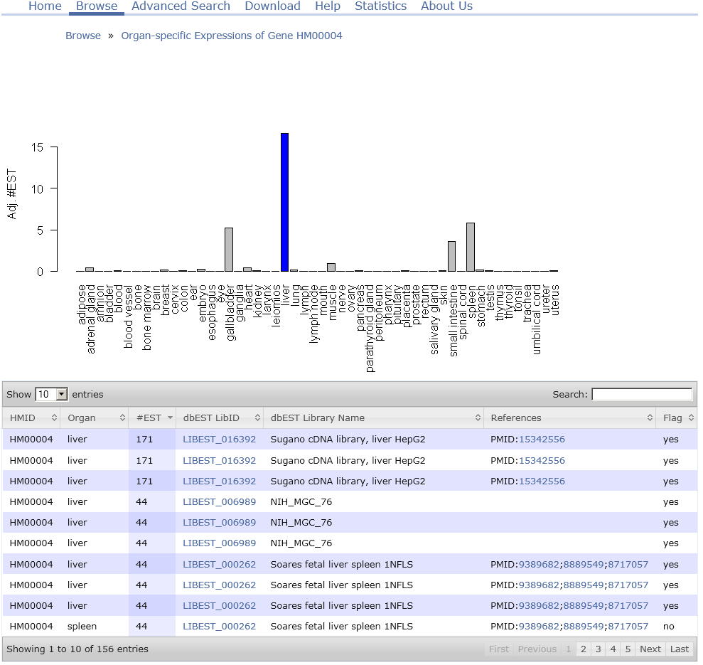
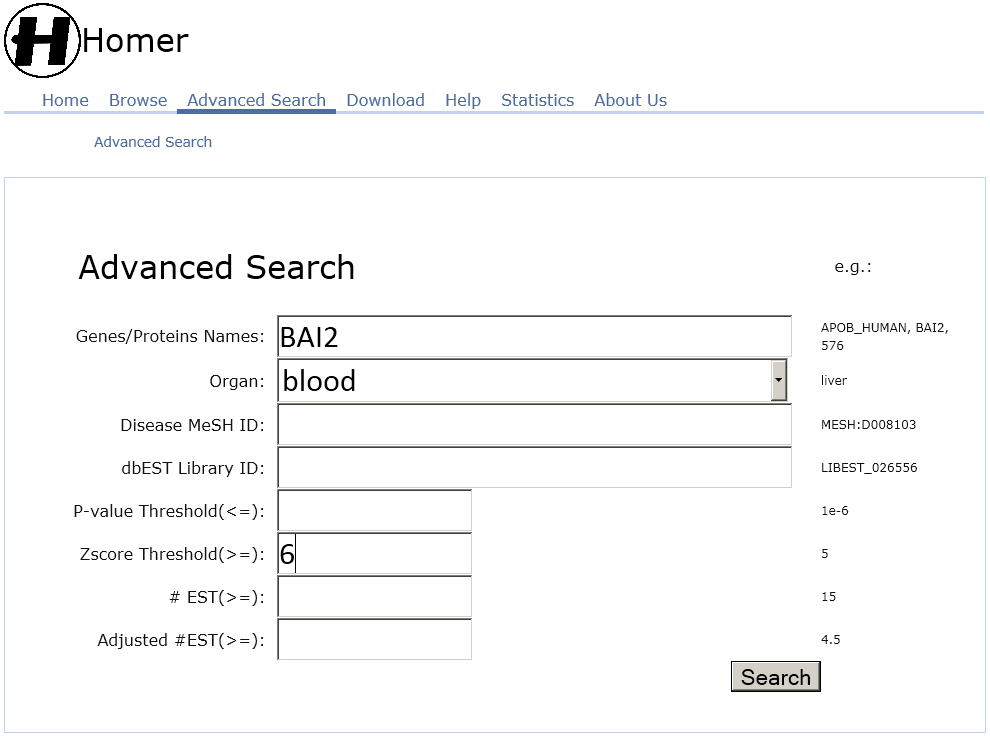
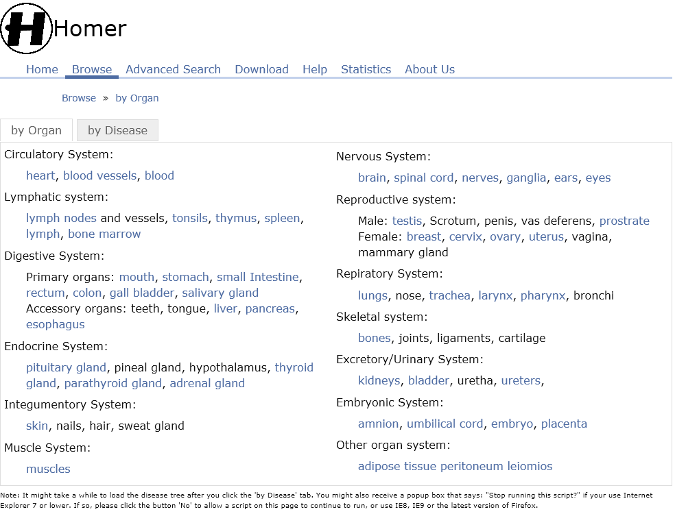
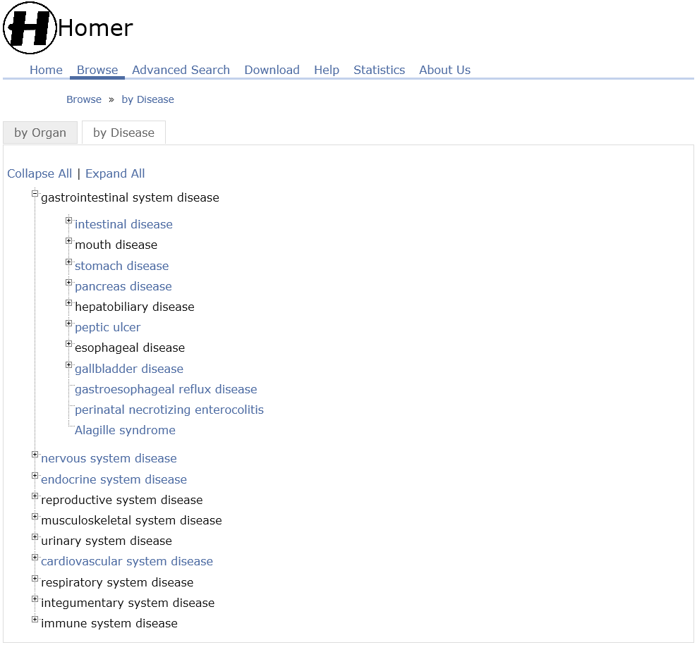

Homer
Homer
Frequently Asked QuestionsWhat is Organ-specific Marker? The organ-specific marker is defined as an organ-specific gene/protein that is also implicated in human diseases related to the organ. It is an indicator to measure the wellness or normal functioning of a tissue in a respective organ. It introduces effective intervention techniques towards preventive and predictive medicine. It can improve sensitivity and target organ specificity for most peripheral clinical pathology. The Human Organ-specific Molecule Electronic Repository (Homer) is a comprehensive database covering about 22809 proteins, 52 organs, and 4290 diseases integrated and filtered from organ-specific protein/genes and disease databases like dbEST[1], TiSGeD[2], HPA[3], CTD[5], and Disease Ontology[6]. It is the first comprehensive database that can be used to analyze, identify, and characterize organ-specific biomarkers in association with disease-organ and disease-protein relationship. The database has a web user interface that allows users to query organ-specific genes/proteins by gene, protein, organ or disease, to explore the histogram of an organ-specific gene/protein, and to identify disease-related organ-specific genes by browsing the disease online. The user interfaces of the web-based online version of Homer supports multiple search options. The first search option shown in the Figure 1 allows users to query organ-specific gene/protein by a gene or protein or multiple genes or proteins. It can also browse Gene Symbol, Organ Specificity, Source, Significance(pvalue and zscore), and Disease Relevance for each gene/protein(Figure 2). Users can further explore the histogram of organ-specific gene/protein across the 52 organs by clicking the histogram icon in the organ specificity column (Figure 3). In the last column, users will be redirected to the disease relevance webpage when clicking on the disease relevance icon (Figure 4). Secondly, users can query organ-specific gene/protein by Advanced Search(Figure 5). Lastly, users can query organ-specific gene/protein by browsing human organ system(Figure 6) or disease ontology (Figure 7). The organ-specific biomarkers are freely available for download in tab-delimited format on the download page or individual inqury page.  Figure 1: query organ-specific gene/protein by a gene or protein or multiple genes or proteins. This is a search to determine the organ-specific genes/proteins. Users can use different identifiers to query the database. The recommended terms are Unigene ID¡¯s, Entrenz gene ID¡¯s, Gene name, Uniprot ID¡¯s, and IPI ID¡¯s. It's CASE SENSITIVE.  Figure 2: The result of querying organ-specific gene/protein by gene or protein. The query ¡°APOB¡± directed to the respective protein whose corresponding Genes (Unigene ID), Organ Specificity, P-value, Zscore, disease relevance, and the database source is presented. A click on the histogram icon provides a histogram graphing the expression of the queried gene in all the available organs (Figure 3). Clicking on the disease relevance icon users will be directed to the disease relevance webpage where the related diseases and associated organs could be mapped (Figure 4).  Figure 3: histogram of the expression of the queried gene or protein
Figure 4: disease relevance of the queried gene or protein  Figure 5: advanced search  Figure 6: browsing by human organ system  Figure 7: browsing by disease ontology
References:1. Boguski MS, Tolstoshev CM, Bassett DE, Jr.: Gene discovery in dbEST. Science 1994, 265(5181):1993-1994. |